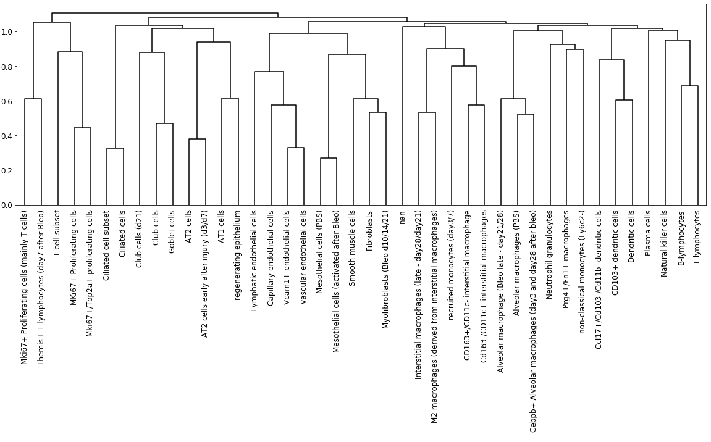

sc_toolbox.plot.marker_dendrogram#
- sc_toolbox.plot.marker_dendrogram(marker_table, threshold=0.7, column='cluster', log_fc_key='log_FC', label_size=10, orientation='top', figsize=(10, 4), save=None)[source]#
Plots a dendogram of used marker genes.
- Parameters:
marker_table (
DataFrame) – A marker table as generated by sct.calc.extended_marker_tablethreshold (
float) – Threshold for the log fold changecolumn (
str) – Column to create pivot by; usually just the clusterslog_fc_key (
str) – Key for the stored log fold changes in the marker tablelabel_size (
int) – Font size of the labelsorientation (
str) – Orientation of the figure; Currently just ‘top’ or no orientationfigsize (
Tuple[int,int]) – Size of the figure as specified in matplotlib
Example
